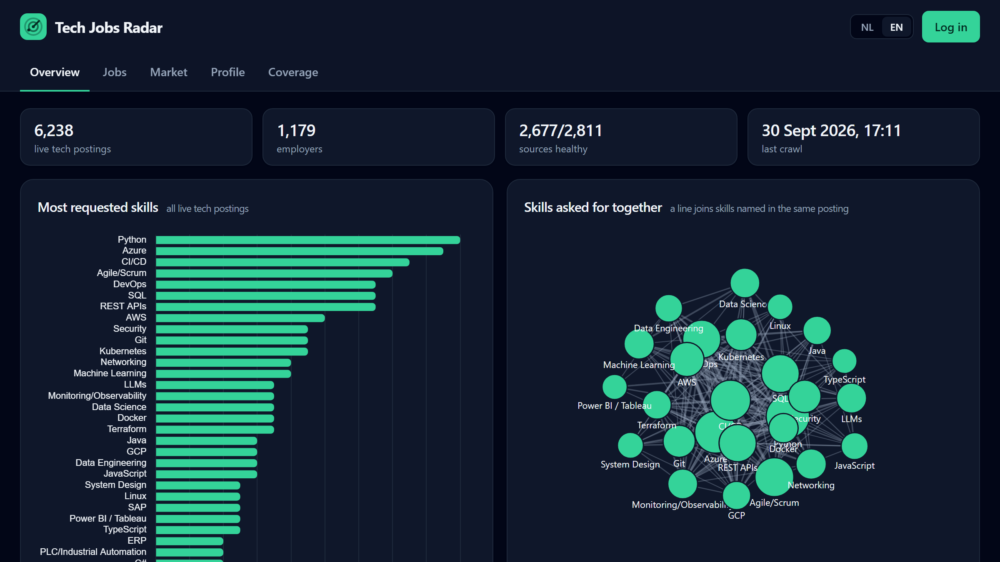

Live since September 2026
Tech Jobs Radar
A public job board that reads postings from Dutch employer career sites, classifies tech roles and extracts structured fields such as skills, seniority and visa sponsorship. Extraction changes are gated in CI by a golden evaluation set.